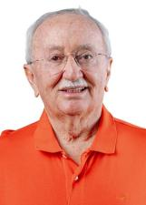

Sergipe
Quem ocupa os cargos hoje e quem assume em 2027.
Resultado provisórioTSE, capturado em 29/10/2026
Poder Executivo
Administra o governo e executa as leis: saúde, educação, segurança, estradas e o orçamento.
Governador
FábioPSD · 623.851 votos★ Novato›Quem comanda cada cidade do estado.
Poder Legislativo
Cria as leis, aprova o orçamento e fiscaliza o Executivo.
Senadores (3)
Delegado Alessandro VieiraREDE · 474.449 votos★ Novato no Senado›LaércioPP · 310.300 votos · eleito em 2022★ Novato no Senado›Rogerio Carvalho SantosPT · 300.247 votos★ Novato no Senado›Deputados federais (8)
Bancada federal por partido
8 cadeiras de Sergipe
- PSD225%
- UNIÃO225%
- PL112%
- PP112%
- PT112%
- REPUBLICANOS112%
Do partido com mais cadeiras para o com menos, não por posição política. Cada partido usa a sua cor de marca.
Deputados federais (8): buscar e ver a lista
Deputados estaduais e distritais (24)
Assembleia por partido
24 cadeiras de Sergipe
- PSD521%
- UNIÃO417%
- PL312%
- REPUBLICANOS312%
- CIDADANIA28%
- PP28%
- PV28%
- PDT14%
- PSOL14%
- PT14%
Do partido com mais cadeiras para o com menos, não por posição política. Cada partido usa a sua cor de marca.
Deputados estaduais e distritais (24): buscar e ver a lista

Luciano BispoPSD · 30.867 votos✓ Reeleito›Luciano PimentelPP · 18.073 votos✓ Reeleito›Luizao Dona TrampiUNIÃO · 18.291 votos · eleito em 2022★ Novato›Maisa MitidieriPSD · 28.174 votos✓ Reeleito›Marcelo SobralUNIÃO · 22.159 votos★ Novato›Marcos OliveiraPL · 35.114 votos★ Novato›Netinho GuimarãesPL · 24.164 votos★ Novato›Neto BatalhaPP · 14.990 votos · eleito em 2022★ Novato›Pato MaravilhaPL · 27.552 votos★ Novato›Paulo JRPV · 27.947 votos★ Novato›Os eleitos de cada cidade do estado.
Poder Judiciário
Julga os conflitos e garante que as leis sigam a Constituição.
Os desembargadores do Tribunal de Justiça e do Tribunal Regional Eleitoral. Não são eleitos.
Poder Executivo
Administra o governo e executa as leis: saúde, educação, segurança, estradas e o orçamento.
Governador
FábioPSD · 727.291 votos✓ Reeleito›Quem comanda cada cidade do estado.
Poder Legislativo
Cria as leis, aprova o orçamento e fiscaliza o Executivo.
Senadores (3)
Delegado AlessandroMDB · 399.775 votos✓ Reeleito›LaércioPP · 310.300 votos · eleito em 2022★ Novato no Senado›Rogerio CarvalhoPT · 511.142 votos✓ Reeleito›Deputados federais (8)
Bancada federal por partido
8 cadeiras de Sergipe
- PSD225%
- UNIÃO225%
- PP112%
- PSB112%
- PT112%
- REPUBLICANOS112%
Do partido com mais cadeiras para o com menos, não por posição política. Cada partido usa a sua cor de marca.
Deputados federais (8): buscar e ver a lista
Deputados estaduais e distritais (24)
Assembleia por partido
24 cadeiras de Sergipe
- UNIÃO625%
- PSD521%
- REPUBLICANOS312%
- MDB28%
- PL28%
- PSB28%
- PV28%
- AVANTE14%
- PT14%
Do partido com mais cadeiras para o com menos, não por posição política. Cada partido usa a sua cor de marca.
Deputados estaduais e distritais (24): buscar e ver a lista
Os eleitos de cada cidade do estado.
Poder Judiciário
Julga os conflitos e garante que as leis sigam a Constituição.
Os desembargadores do Tribunal de Justiça e do Tribunal Regional Eleitoral. Não são eleitos.
Como ler
★ Novato Primeiro mandato nesta casa (Câmara ou Senado).
✓ Reeleito Já estava no cargo e foi eleito de novo.
↺ Retorno Já teve mandato, mas estava fora.
Sem selo Não conseguimos ligar a pessoa a um mandato anterior. Isso não quer dizer que seja novata: simplesmente não afirmamos nada.
Provisório Só é confirmado na diplomação.